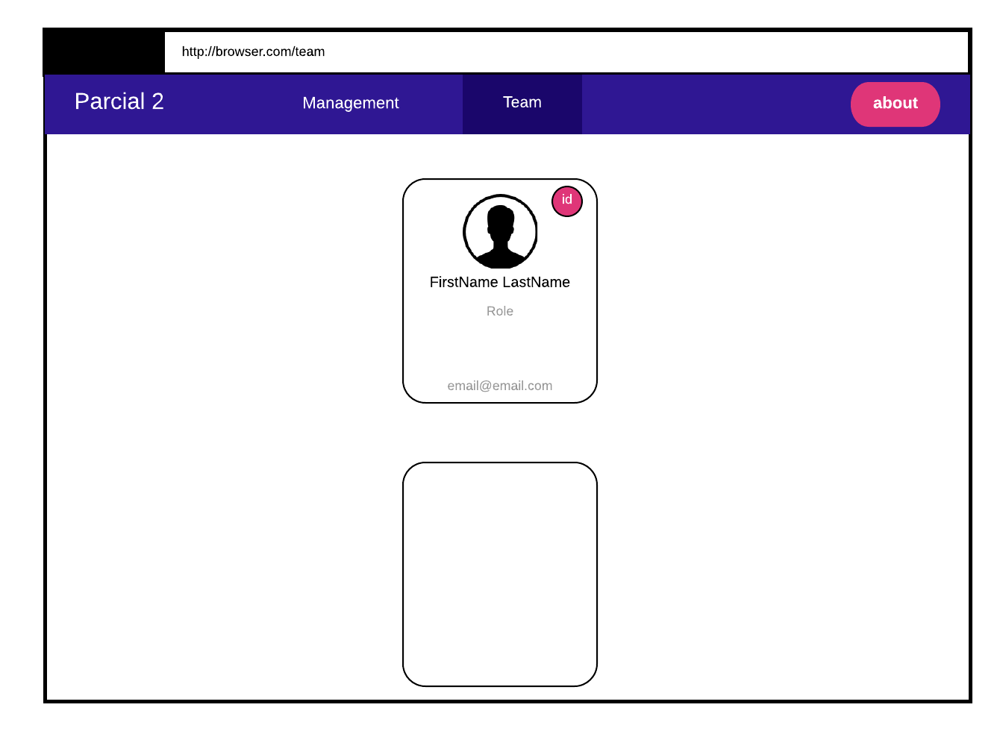

Parte II - (60 pts)
Descripcion
Una vez completada la Parte 1 ahora debe crear un home page con los siguientes elementos:
-
navbar:
- Title: Parcial 2 o lo que usted desee
- Management: donde se deplegara los info cards de cada una de las personas que se encuentren trabajando en la empresa en el management team
- Team: se deplegara los info cards de cada persona que trabaje dentro del team que ocupen cualquier otro puesto.
- About: donde se desplegara informacion acerca de Usted, en la Parte 3
-
Card List/Table: lista de containers con cada info card, OJO es solamente en 1 columna. Esta lista PUEDE ser como Cards
en el navbar las opciones del bar pueden estar alineadas hacia la derecha, no necesariamente en el centro.
Web Page
La pagina debera verse asi:

en el root (home) puede dejarlo en blanco o utilice un
<h1>
Su Nombre Completo
</h1>
Observaciones
- Preste atención a los colores que se utilizan (css) Material Design, PERO USTED PUEDE HACERLO PERSONALIZADO Y AGREGAR LOS COLORES O DISENOS QUE USTED QUIERA
- Preste atención a la ubicacion de las cosas.
- Vea que el about es un "boton" de color fuschia.
- NO es un grid, es en una sola columna.
- La segunda info card aparece en "blanco" porque es una copia de la de arriba pero con datos diferentes (es otro empleado)
- Por favor que ni se le pase por la mente quemar o hardcodear